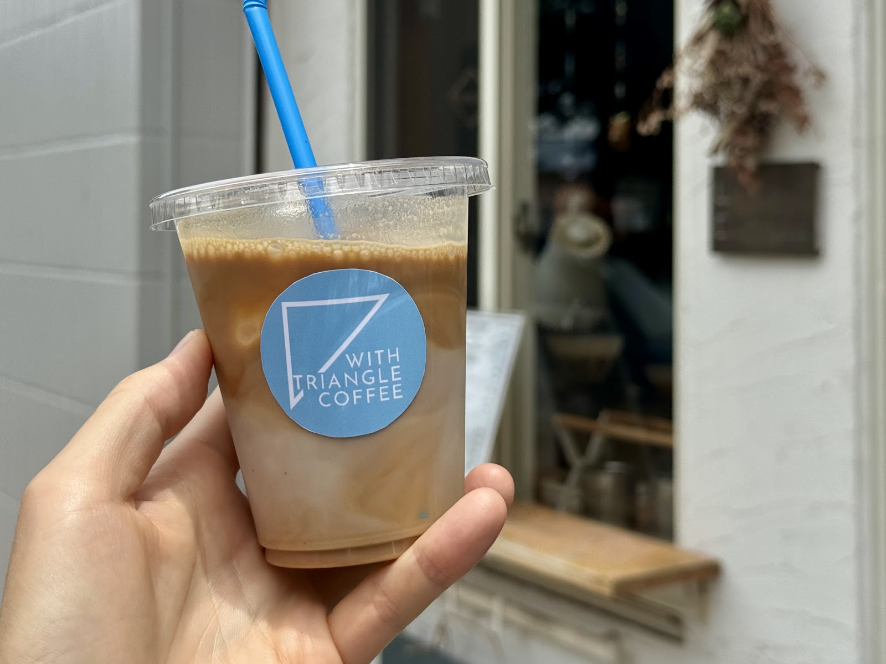

我孫子駅の改札からほど近く、徒歩圏内で気軽に立ち寄れる立地です。 お出かけの合間のひと休みに、ぜひお立ち寄りください。
ACCESS
- 店名
- WITH TRIANGLE COFFEE
- 住所
- 千葉県我孫子市本町2丁目3-1
- 営業時間
- 営業時間は変更となる場合がございますので、最新情報はInstagramにてご確認ください。
Map
地図
Access
我孫子駅前という立地の良さ

Photo: Hayato OnishiMap
Access

Photo: Hayato Onishi我孫子駅の改札からほど近く、徒歩圏内で気軽に立ち寄れる立地です。 お出かけの合間のひと休みに、ぜひお立ち寄りください。